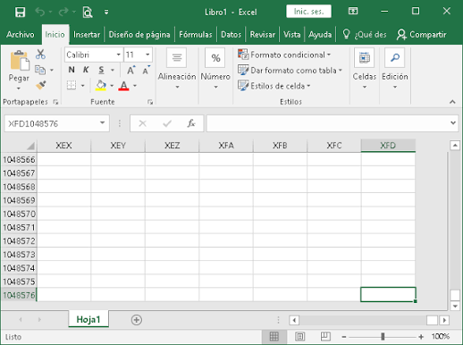
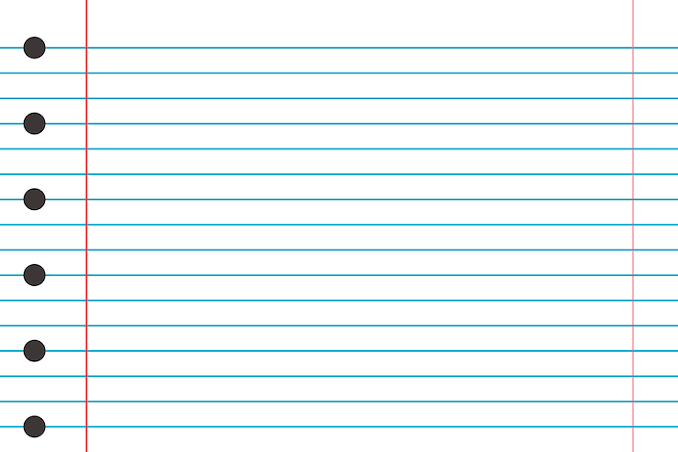
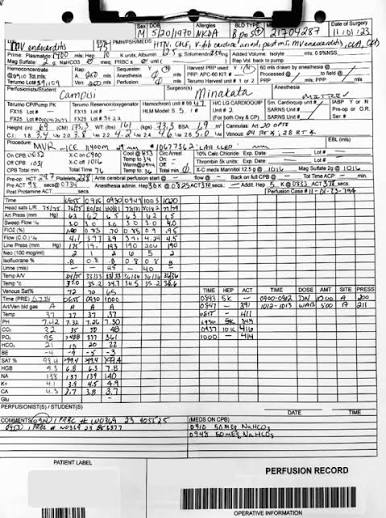

Registers
Cash is collected at checkout
Walmart · Service Design
Turning fragmented store practices into a traceable operating model and creating the foundation for future digitalization.
The challenge
Cash is collected at checkout
Submanager or manager prepares the handoff
Provider picks up the cash
Cash is deposited
Errors
Reconciliation efforts
Losses
Time spent on investigations
Risk
Limited traceability
Understanding the As-Is
Without a company-wide way of working, stores had developed their own controls to reduce mistakes and keep track of cash movements.

Store AExcel files

Store BNotebooks

Store CPaper records
My role
Understand the actual process
Identify and prioritize UX + business gaps
Work with store staff, Treasury and other stakeholders
Common way of working and required system changes (e.g. SAP)
Managed the workstream with Treasury, aligned initiatives and timelines, and supported research readouts and stakeholder discussions.
Designing the To-Be
Fragmented and manual
Registers
Store management
Cash-in-transit
Bank
Standardized and traceable
Registers
Store management
Cash-in-transit
Bank
What it enabled
Delivered for business viability assessment
Added to the SAP backlog
Implemented in the operation
Incorporated into operational documentation